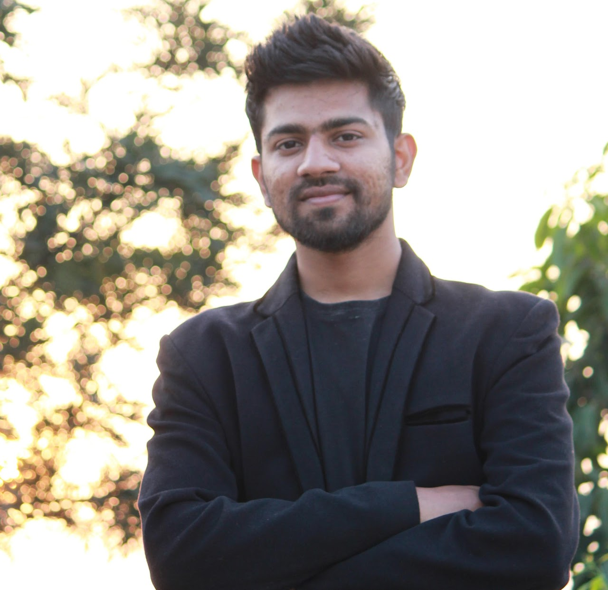
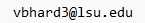

Vishal Bhardwaj
|  |
Vishal Bhardwaj ContactEmail:  |
If numbers aren't beautiful, I don't know what is! - Paul Erdős.
Brief Biography
Hi! I am a graduate student at Louisiana State University. My mentor is Gene Kopp. My main research interest is analytic number theory, though I'm generally a fan of number theory of all flavors.
Previously, I received my M.Sc. from the NIT Manipur advised by Yumnam Rohen Singh. I am truly blessed to have Shanta Laishram as a master's thesis advisor at the Indian Statistical Institute Delhi. I completed my Bachelors's from GD Goenka University Gurugram under the guidance of Smita Sood. In the Summer of 2018, I was a research intern at IIT Guwahati, working with Natesan Srinivasan.
CV
You can find my CV here.
Visitor Flag Counter
I set up this flag counter for curiosity. It shows counts since May 17, 2023.